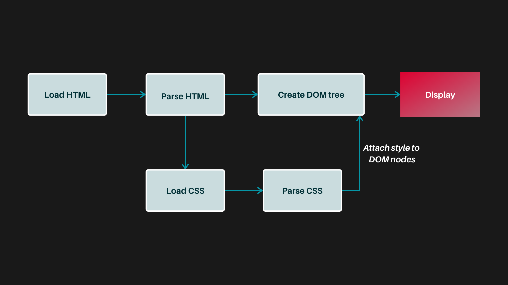
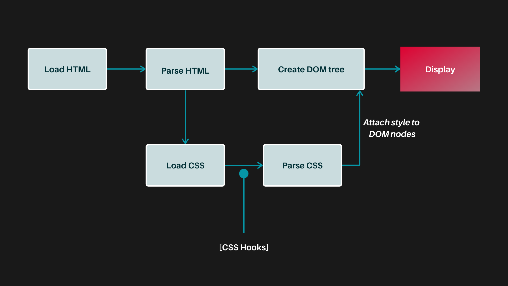
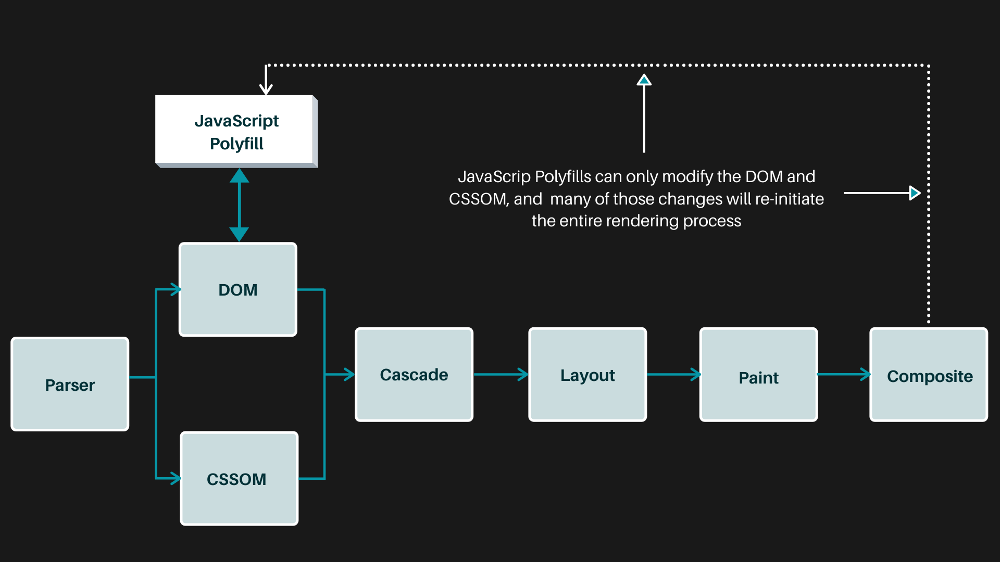
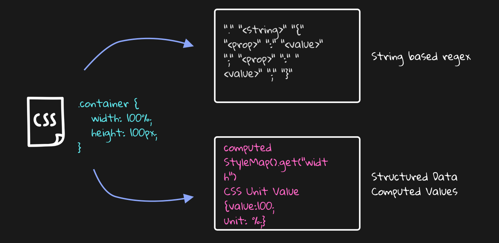
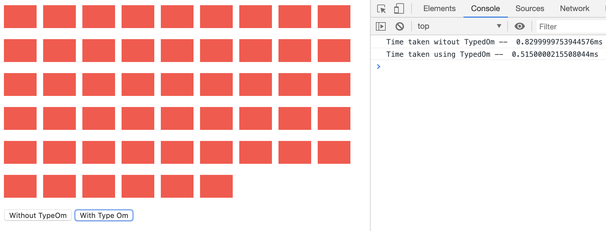
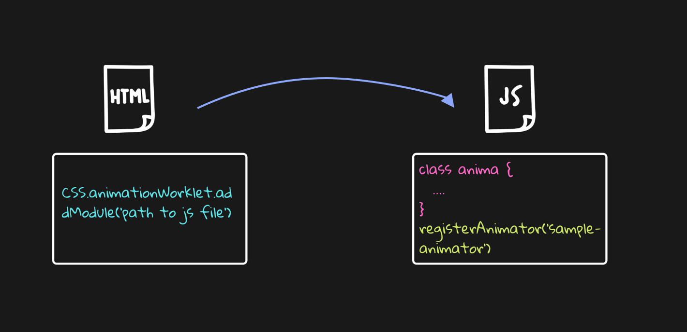

CSS Houdini
New Era of CSS
SPEAKERS SAKET KUMAR & VIDIT ANJARIA
Dag Iedereen
Welcome to DrupalCon Amsterdam.
What is Houdini?

What is CSS Houdini?
- Browser CSS Engine
- CSS APIs
Which APIs are available?
- Typed OM
- Properties & Vaues API
- Paint API
- Layout API
- Animation API
- Parser API
- Font Metrics API
How CSS Works?
Rendering Pipeline
Why CSS Houdini??
Challenges!!
- Conic Gradient
- Checkbox & Radio button
- Border Shapes
- Tooltip
- } Paint API
- Mosaic Layout - Layout API
- Animated Gradient - Custom Properties
Typed OM
Typed OM Demo
Web workers, Service Workers & Worklets
Layout API

Animation API
Paint API

Cautions!!!
- This is Experimental
- chrome://flags/ - #enable-experimental-web-platform-features
- Must be localhost or https
- Is Houdinig Ready Yet?
- Hope this will work
Questions?!!
Thank You!!!
Connect with us
 @saket_kmr
@saket_kmr
@vidit_27
References
- Demo - https://github.com/vidit-anjaria/css-houdini-demo
- Slides - https://github.com/vidit-anjaria/css-houdini-slides
- Special Thanks to - Houdini Glitch - http://houdini.glitch.me
- Special Thanks to - Houdini Rocks - https://css-houdini.rocks
- Special Thanks to - Piyuesh Kumar & Ruchika Mohite